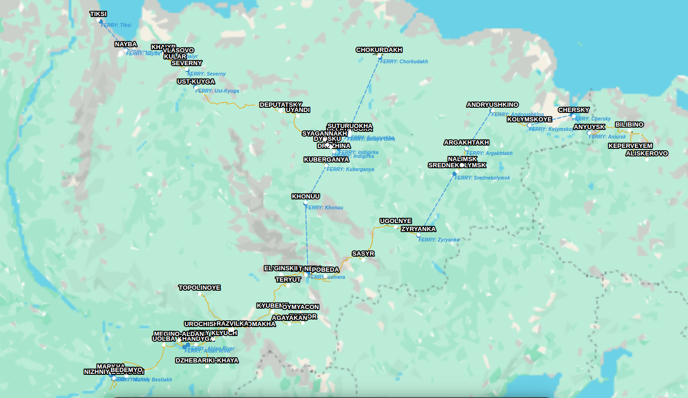

Latest Release
Quick Stats
About the Map
What's Included

Map Coverage
- 7,000+ km of driveable roads across the Far Eastern Federal District
- 40+ detailed cities, towns, and remote settlements
- River ferry crossings connecting isolated regions
- Federal highways, regional roads, and unnamed dirt tracks
- Continuous expansion with every release
Installation Guide
Load Order
Place mods in your ETS2 Mod Manager in this priority (top = highest priority):